Section 6.1 Arclength and Radians
Imagine that you are riding on a Ferris wheel of radius 100 feet, and each rotation takes eight minutes. We can use angles in standard position to describe your location as you travel around the wheel. The figure at right shows the locations indicated by \(\theta = 0\degree,~ 90\degree,~ 180\degree,\) and \(270\degree\text{.}\) But degrees are not the only way to specify location on a circle.
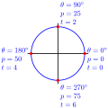
We could use percent of one complete rotation and label the same locations by \(p = 0,~ p = 25,~ p = 50,~\text{and}~ p = 75\text{.}\) Or we could use the time elapsed, so that for this example we would have \(t = 0,~ t = 2,~t = 4,~\text{and}~ t = 6\) minutes.
Another useful method to describe your location uses the distance traveled, or arclength, along the circle. How far have you traveled around the Ferris wheel at each of the locations shown?
Before we consider that question, let's agree on some vocabulary. An arc is a portion of a circle, and its length, quite naturally, is called arclength. An angle with vertex at the center of the circle is called a central angle, and a central angle whose sides meet the endpoints of an arc is said to subtend the arc. Or we may say that the angle spans the arc. If the arc represents a distance traveled, we sometimes refer to such an angle as the angle of displacement.
Subsection Arclength
Recall that the circumference of a circle is proportional to its radius,
\begin{equation*}
\blert{C = 2 \pi r}
\end{equation*}
If we walk around the entire circumference of a circle, the distance we travel is \(2\pi\) times the length of the radius, or about 6.28 times the radius. If we walk only part of the way around the circle, then the distance we travel depends also on the angle of displacement.
For example, an angle of \(45\degree\) is \(\dfrac{1}{8}\) of a complete revolution, so the the length of the arc from point \(A\) to point \(B\text{,}\) called \(s\) in the figure at right, is \(\dfrac{1}{8}\) of the circumference. Thus
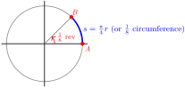
\begin{equation*}
s = \dfrac{1}{8}(2\pi r) = \dfrac{\pi}{4} r
\end{equation*}
Similarly, the angle of displacement from point \(A\) to point \(C\) is \(\dfrac{3}{4}\) of a complete revolution, so the arclength \(s\) along the circle from \(A\) to \(C\text{,}\) shown at right, is
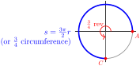
\begin{equation*}
s = \dfrac{3}{4}(2\pi r) = \dfrac{3\pi}{2} r
\end{equation*}
In general, for a given circle the length of the arc spanned by an angle is proportional to the size of the angle.
Arclength on a Circle.
\begin{equation*}
\blert{\textbf{Arclength}}~ = ~ \blert{(\textbf{fraction of one revolution}) \cdot (2\pi r)}
\end{equation*}
The Ferris wheel in the introduction has circumference
\begin{equation*}
C = 2\pi (100) = 628~ \text{feet}
\end{equation*}
so in half a revolution you travel 314 feet around the edge, and in one-quarter revolution you travel 157 feet.
To indicate the same four locations on the wheel by distance traveled, we would use
\begin{equation*}
s = 0,~ s = 157,~ s = 314,~ \text{and}~ s = 471\text{,}
\end{equation*}
as shown at right.
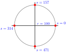
Example 6.1.
What length of arc is spanned by an angle of \(120\degree\) on a circle of radius 12 centimeters?
Solution.
Because \(\dfrac{120}{360} = \dfrac{1}{3}\text{,}\) an angle of \(120\degree\) is \(\dfrac{1}{3}\) of a complete revolution, as shown at right.
Using the formula above with \(r = 12\text{,}\) we find that
\begin{equation*}
s = \dfrac{1}{3}(2\pi \cdot 12) = \dfrac{2 \pi}{3} \cdot 12 = 8\pi ~ \text{cm}
\end{equation*}
or about 25.1 cm.
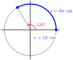
Checkpoint 6.2.
How far have you traveled around the edge of a Ferris wheel of radius 100 feet when you have turned through an angle of \(150\degree\text{?}\)
Subsection Measuring Angles in Radians
If you think about measuring arclength, you will see that the degree measure of the spanning angle is not as important as the fraction of one revolution it covers. This observation suggests a new unit of measurement for angles, one that is better suited to calculations involving arclength. We'll make one change in our formula for arclength, from
\begin{equation*}
\textbf{Arclength}~ = ~ (\textbf{fraction of one revolution}) \cdot (2\pi r)
\end{equation*}
to
\begin{equation*}
\blert{\textbf{Arclength}~ =} ~ \blert{(\textbf{fraction of one revolution}\times 2\pi) \cdot r}
\end{equation*}
We'll call the quantity in parentheses, (fraction of one revolution \(\times 2\pi\)), the radian measure of the angle that spans the arc.
Radians.
The radian measure of an angle is given by
\begin{equation*}
\blert{(\textbf{fraction of one revolution}\times 2\pi)}
\end{equation*}
For example, one complete revolution, or \(360\degree\text{,}\) is equal to \(2\pi\) radians, and one-quarter revolution, or \(90\degree\text{,}\) is equal to \(\dfrac{1}{4}(2\pi)\) or \(\dfrac{\pi}{2}\) radians. The figure below shows the radian measure of the quadrantal angles.
Example 6.3.
What is the radian measure of an angle of \(120\degree\text{?}\)
Solution.An angle of \(120\degree\) is \(\dfrac{1}{3}\) of a complete revolution, as we saw in the previous example. Thus, an angle of \(120\degree\) has a radian measure of \(\dfrac{1}{3}(2\pi)\text{,}\) or \(\dfrac{2\pi}{3}\text{.}\)
Checkpoint 6.4.
What fraction of a revolution is \(\pi\) radians? How many degrees is that?
Answer.Half a revolution, \(180\degree\)
Radian measure does not have to be expressed in multiples of \(\pi\text{.}\) Remember that \(\pi \approx 3.14\text{,}\) so one complete revolution is about 6.28 radians, and one-quarter revolution is \(\dfrac{1}{4}(2\pi) = \dfrac{\pi}{2}\text{,}\) or about 1.57 radians. The figure below shows decimal approximations for the quadrantal angles.
| Degrees |
Radians:
Exact Values |
Radians: Decimal
Approximations |
| \(0\degree\) |
\(0\) |
\(0\) |
| \(90\degree\) |
\(\dfrac{\pi}{2}\) |
\(1.57\) |
| \(180\degree\) |
\(\pi\) |
\(3.14\) |
| \(270\degree\) |
\(\dfrac{3\pi}{2}\) |
\(4.71\) |
| \(360\degree\) |
\(2\pi\) |
\(6.28\) |
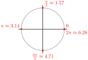
Example 6.6.
In which quadrant would you find an angle of 2 radians? An angle of 5 radians?
Solution.Look at the figure above. The second quadrant includes angles between \(\dfrac{\pi}{2}\) and \(\pi\text{,}\) or 1.57 and 3.14 radians, so 2 radians lies in the second quadrant. An angle of 5 radians is between 4.71 and 6.28, or between \(\dfrac{3\pi}{2}\) and \(2\pi\) radians, so it lies in the fourth quadrant.
Checkpoint 6.7.
Draw circles centered at the origin and sketch (in standard position) angles of approximately 3 radians, 4 radians, and 6 radians.
It turns out that measuring angles in radians is useful for many applications besides calculating arclengths, so we need to start thinking in radians. To help that process, we'll first learn to convert between degrees and radians.
Subsection Converting Between Degrees and Radians
It is not difficult to convert the measure of an angle in degrees to its measure in radians, or vice versa. One complete revolution is equal to \(2\pi\) radians or to \(360\degree\text{,}\) so
\begin{equation*}
360\degree = 2\pi ~\text{radians}
\end{equation*}
If we divide both sides of this equation by \(360\degree\text{,}\) we get a fraction that is equal to 1:
\begin{equation*}
1 = \dfrac{2\pi ~\text{radians}}{360\degree} = \dfrac{\pi ~\text{radians}}{180\degree}
\end{equation*}
And of course it is also true that
\begin{equation*}
1 = \dfrac{180\degree}{\pi ~\text{radians}}
\end{equation*}
Because multiplying by 1 does not change the value of a number, we can use these fractions to convert between degrees and radians.
Converting bewteen degrees and radians.
To convert from radians to degrees we multiply the radian measure by \(\dfrac{180\degree}{\pi ~\text{radians}}\text{.}\)
To convert from degrees to radians we multiply the degree measure by \(\dfrac{\pi ~\text{radians}}{180 \degree}\text{.}\)
Example 6.8.
Convert 3 radians to degrees.
Convert 3 degrees to radians.
Solution.
\(\displaystyle (3 ~\text{radians}) \times \left(\dfrac{180\degree}{\pi}\right) = \dfrac{540\degree}{\pi} \approx 171.9\degree\)
\(\displaystyle (3\degree) \times \left(\dfrac{\pi}{180\degree}\right) = \dfrac{\pi}{60}\approx 0.05~ \text{radians.}\)
Checkpoint 6.9.
Convert \(60\degree\) to radians. Give both an exact answer and an approximation to three decimal places.
Convert \(\dfrac{3\pi}{4}\) radians to degrees.
Answer.
\(\dfrac{\pi}{3} \approx 1.047\) radians
\(\displaystyle 135\degree\)
Thus, the fraction \(\dfrac{180\degree}{\pi}\) (or its reciprocal \(\dfrac{\pi}{180 \degree}\)) gives us a conversion factor between degrees and radians:
Unit Conversion for Angles.
\begin{equation*}
\blert{\dfrac{180\degree}{\pi~\text{radians}} = 1}
\end{equation*}
From our conversion factor we also learn that
\begin{equation*}
\blert{ 1~\text{radian} = \dfrac{180\degree}{\pi} \approx 57.3\degree}
\end{equation*}
So while \(1\degree\) is a relatively small angle, 1 radian is much larger — nearly \(60\degree\text{,}\) in fact.
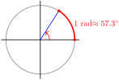
But this is reasonable, because there are only a little more than 6 radians in an entire revolution. An angle of 1 radian is shown above.
We'll soon see that, for many applications, it is easier to work entirely in radians. For reference, the figure below shows a radian protractor.
Subsection Arclength Formula
Now let us return to our calculation of arclength, and we'll see the first instance in which measuring angles in radians is useful: To calculate an arclength we need only multiply the radius of the circle by the radian measure of the spanning angle, \(\theta\text{.}\) Look again at our formula for arclength:
\begin{equation*}
\blert{\textbf{Arclength}~ =} ~ \blert{(\textbf{fraction of one revolution}\times 2\pi) \cdot r}
\end{equation*}
The quantity in parentheses, fraction of one revolution \(\times 2\pi\text{,}\) is just the measure of the spanning angle in radians. Thus, if \(\theta\) is measured in radians, we have the following simple formula for arclength, \(s\text{.}\)
Arclength Formula.
On a circle of radius \(r\text{,}\) the length \(s\) of an arc spanned by an angle \(\theta\) in radians is
\begin{equation*}
\blert{s = r\theta}
\end{equation*}
Thus, there is a special relationship between arclength and radians. An angle of 1 radian spans an arc on a circle equal to the radius of the circle, as shown at right. And the length of any arc is just the measure of its spanning angle in radians times the radius of the circle.
So for instance, we can use the formula to find the arclength spanned by an angle of 2.5 radians on a circle of radius six inches:
\begin{equation*}
s = r \theta = 6 (2.5) = 15 ~ \text{inches}
\end{equation*}
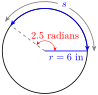
We can also use the formula in the form \(\theta = \dfrac{s}{r}\) to find an angle that spans a given arc. For example, an arclength equal to one radius determines a central angle of one radian, or about \(57.3\degree\text{.}\) In the next example, we compute a change in latitude on the Earth's surface.
Example 6.11.
The radius of the Earth is about 3960 miles. If you travel 500 miles due north, how many degrees of latitude will you traverse? (Latitude is measured in degrees north or south of the equator.)
Solution.
We think of the distance 500 miles as an arclength on the surface of the Earth, as shown at right. Substituting \(s = 500\) and \(r = 3960\) into the arclength formula gives
\begin{align*}
500 \amp = 3960 ~ \theta\\
\theta \amp = \dfrac{500}{3960} = 0.1263~ \text{radians}
\end{align*}
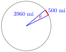
To convert the angle measure to degrees, we multiply by \(\dfrac{180\degree}{\pi}\) to get
\begin{equation*}
0.1263\left(\dfrac{180\degree}{\pi}\right) = 7.23\degree
\end{equation*}
Your latitude has changed by about \(7.23\degree\text{.}\)
Checkpoint 6.12.
The distance around the face of a large clock from 2 to 3 is five feet. What is the radius of the clock?
Subsection Unit Circle
In the rest of this chapter we will see how to use the trigonometric functions sine, cosine, and tangent when the input variable is measured in radians instead of degrees, and why making that change greatly increases the utility of those functions. In Section 4.1 we connected the sine and cosine to the coordinates of points on a unit circle, a circle of radius 1. Here is an important observation that will inform our study:
On a unit circle, \(r = 1\text{,}\) so the arclength formula becomes \(s = \theta\text{.}\) Thus, on a unit circle, an arc of length 1 determines a central angle of 1 radian, or about \(57.3 \degree\text{.}\) And the measure of a (positive) angle in radians is equal to the length of the arc it spans. In other words, if we walk around the circle, each time we travel over an arclength of one radius, we turn through an angle of one radian.
Example 6.13.
You are walking on a trail around a circular pond of radius one mile. You have have walked 4 miles from the trailhead. Sketch your location now.
Solution.
The pond is a unit circle, so you have traversed an angle in radians equal to the arc length traveled, 4 miles. An angle of 4 radians is in the middle of the third quadrant relative to your starting point, more than halfway but less than three-quarters around the pond.
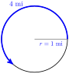
Checkpoint 6.14.
An ant walks around the rim of a circular birdbath of diameter 2 feet. How far has the ant walked when it has turned through an angle of \(210\degree\text{?}\)
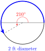
Review the following skills you will need for this section.
Algebra Refresher 6.1.
Use the appropriate conversion factor to convert units.
\(\dfrac{1~ \text{mile}}{1.609~\text{kilometers}} = 1\)
10 miles = km
50 km = miles
\(\dfrac{1~ \text{acre}}{0.405~\text{hectare}} = 1\)
40 acres = hectares
5 hectares = acres
\(\dfrac{1~ \text{horsepower}}{746~\text{watts}} = 1\)
250 horsepower = watts
1000 watts = horsepower
\(\dfrac{1~ \text{troy ounce}}{480~\text{grains}} = 1\)
0.5 troy oz = grains
100 grains = troy oz
\(\underline{\qquad\qquad\qquad\qquad}\)
Algebra Refresher Answers
a. \(16.09\) km b. \(31.08\) mi
a. \(16.2\) hectares b.\(12.35\) acres
a. \(186,500\) watts b. \(1.34\) horsepower
a. \(240\) grains b. \(0.21\) troy oz
Subsection Section 6.1 Summary
Subsubsection Vocabulary
Arclength
Radian
Conversion factor
Latitude
Unit circle
Subsubsection Concepts
The distance we travel around a circle of radius is proportional to the angle of displacement.
\begin{equation*}
\textbf{Arclength}~ = ~ (\textbf{fraction of one revolution}) \cdot (2\pi r)
\end{equation*}
-
We measure angles in radians when we work with arclength.
Radians.
The radian measure of an angle is given by
\begin{equation*}
(\textbf{fraction of one revolution}\times 2\pi)
\end{equation*}
An arclength equal to one radius determines a central angle of one radian.
-
Radian measure can be expressed as multiples of \(\pi\) or as decimals.
| Degrees |
\(\dfrac{\text{Radians:}}{\text{Exact Values}}\) |
\(\dfrac{\text{Radians: Decimal}}{\text{Approximations}}\) |
| \(0\degree\) |
\(0\) |
\(0\) |
| \(90\degree\) |
\(\dfrac{\pi}{2}\) |
\(1.57\) |
| \(180\degree\) |
\(\pi\) |
\(3.14\) |
| \(270\degree\) |
\(\dfrac{3\pi}{2}\) |
\(4.71\) |
| \(360\degree\) |
\(2\pi\) |
\(6.28\) |
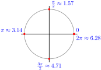
-
We multiply by the appropriate conversion factor to convert between degrees and radians.
Unit Conversion for Angles.
\begin{equation*}
\dfrac{180\degree}{\pi~\text{radians}} = 1
\end{equation*}
To convert from radians to degrees we multiply the radian measure by \(\dfrac{180\degree}{\pi}\text{.}\)
To convert from degrees to radians we multiply the degree measure by \(\dfrac{\pi}{180}\text{.}\)
Arclength Formula.
On a circle of radius \(r\text{,}\) the length \(s\) of an arc spanned by an angle \(\theta\) in radians is
\begin{equation*}
s = r\theta
\end{equation*}
On a unit circle, the measure of a (positive) angle in radians is equal to the length of the arc it spans.
Subsubsection Study Questions
The length of a circular arc depends on what two variables?
Define the radian measure of an angle.
What is the conversion factor from radians to degrees?
On a unit circle, the length of an arc is equal to what other quantity?
Subsubsection Skills
Express angles in degrees and radians #1–8, 25–32
Sketch angles given in radians #1 and 2, 11 and 12
Estimate angles in radians #9–10, 13–24
Use the arclength formula #33–46
Find coordinates of a point on a unit circle #47–52
Calculate angular velocity and area of a sector #55–60
Exercises Homework 6.1
1.
| Radians |
\(0\) |
\(\dfrac{\pi}{4}\) |
\(\dfrac{\pi}{2}\) |
\(\dfrac{3\pi}{4}\) |
\(\pi\) |
\(\dfrac{5\pi}{4}\) |
\(\dfrac{3\pi}{2}\) |
\(\dfrac{7\pi}{4}\) |
\(2 \pi\) |
| Degrees |
\(\hphantom{0000}\) |
\(\hphantom{0000}\) |
\(\hphantom{0000}\) |
\(\hphantom{0000}\) |
\(\hphantom{0000}\) |
\(\hphantom{0000}\) |
\(\hphantom{0000}\) |
\(\hphantom{0000}\) |
\(\hphantom{0000}\) |
Convert each angle to degrees.
Sketch each angle on a circle like this one, and label in radians.
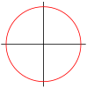
2.
| Radians |
\(0\) |
\(\dfrac{\pi}{6}\) |
\(\dfrac{\pi}{3}\) |
\(\dfrac{\pi}{2}\) |
\(\dfrac{2\pi}{3}\) |
\(\dfrac{5\pi}{6}\) |
\(\pi\) |
\(\dfrac{7\pi}{6}\) |
\(\dfrac{4\pi}{3}\) |
\(\dfrac{3\pi}{2}\) |
\(\dfrac{5\pi}{3}\) |
\(\dfrac{11\pi}{6}\) |
\(2 \pi\) |
| Degrees |
\(\hphantom{0000}\) |
\(\hphantom{0000}\) |
\(\hphantom{0000}\) |
\(\hphantom{0000}\) |
\(\hphantom{0000}\) |
\(\hphantom{0000}\) |
\(\hphantom{0000}\) |
\(\hphantom{0000}\) |
\(\hphantom{0000}\) |
\(\hphantom{0000}\) |
\(\hphantom{0000}\) |
\(\hphantom{0000}\) |
\(\hphantom{0000}\) |
Convert each angle to degrees.
Sketch each angle on a circle like this one, and label in radians.
Exercise Group.
For Problems 3–6, express each fraction of one complete rotation in degrees and in radians.
3.
\(\displaystyle \dfrac{1}{3}\)
\(\displaystyle \dfrac{2}{3}\)
\(\displaystyle \dfrac{4}{3}\)
\(\displaystyle \dfrac{5}{3}\)
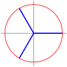
4.
\(\displaystyle \dfrac{1}{5}\)
\(\displaystyle \dfrac{2}{5}\)
\(\displaystyle \dfrac{3}{5}\)
\(\displaystyle \dfrac{4}{5}\)
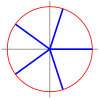
5.
\(\displaystyle \dfrac{1}{8}\)
\(\displaystyle \dfrac{3}{8}\)
\(\displaystyle \dfrac{5}{8}\)
\(\displaystyle \dfrac{7}{8}\)
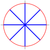
6.
\(\displaystyle \dfrac{1}{12}\)
\(\displaystyle \dfrac{1}{6}\)
\(\displaystyle \dfrac{5}{12}\)
\(\displaystyle \dfrac{5}{6}\)
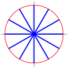
Exercise Group.
For Problems 7–8, label each angle in standard position with radian measure.
7.
Rotate counter-clockwise from 0.
8.
Rotate clockwise from 0.
Exercise Group.
For Problems 9–10, give a decimal approximation to hundredths for each angle in radians.
9.
\(\displaystyle \dfrac{\pi}{6}\)
\(\displaystyle \dfrac{5\pi}{6}\)
\(\displaystyle \dfrac{7\pi}{6}\)
\(\displaystyle \dfrac{11\pi}{6}\)
10.
\(\displaystyle \dfrac{\pi}{4}\)
\(\displaystyle \dfrac{3\pi}{4}\)
\(\displaystyle \dfrac{5\pi}{4}\)
\(\displaystyle \dfrac{7\pi}{4}\)
11.
Locate and label each angle from Problem 9 on the unit circle below. (The circle is marked off in tenths of a radian.)
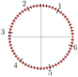
12.
Locate and label each angle from Problem 10 on the unit circle below. (The circle is marked off in tenths of a radian.)
Exercise Group.
From the list below, choose the best decimal approximation for each angle in radians in Problems 13–20. Do not use a calculator; use the fact that \(\pi\) is a little greater than 3.
\begin{equation*}
0.52,~~ 0.79,~~ 2.09,~~ 2.36,~~ 2.62,~~ 3.67,~~ 5.24,~~ 5.50
\end{equation*}
13.
\(\dfrac{2\pi}{3}\)
14.
\(\dfrac{\pi}{4}\)
15.
\(\dfrac{5\pi}{6}\)
16.
\(\dfrac{5\pi}{3}\)
17.
\(\dfrac{\pi}{6}\)
18.
\(\dfrac{7\pi}{4}\)
19.
\(\dfrac{3\pi}{4}\)
20.
\(\dfrac{7\pi}{6}\)
Exercise Group.
For Problems 21–24, say in which quadrant each angle lies.
21.
\(\displaystyle \dfrac{2\pi}{3}\)
\(\displaystyle \dfrac{11\pi}{6}\)
\(\displaystyle \dfrac{-\pi}{6}\)
\(\displaystyle \dfrac{-7\pi}{4}\)
22.
\(\displaystyle \dfrac{5\pi}{4}\)
\(\displaystyle \dfrac{\3pi}{8}\)
\(\displaystyle \dfrac{-5\pi}{6}\)
\(\displaystyle \dfrac{-2\pi}{3}\)
23.
\(\displaystyle 3.5\)
\(\displaystyle 1.9\)
\(\displaystyle 0.8\)
\(\displaystyle 5.5\)
24.
\(\displaystyle 4.0\)
\(\displaystyle 2.6\)
\(\displaystyle 6.1\)
\(\displaystyle 1.5\)
Exercise Group.
For Problems 25–28, complete the table.
25.
| Radians |
\(\dfrac{\pi}{6}\) |
\(\dfrac{\pi}{4}\) |
\(\dfrac{\pi}{3}\) |
| Degrees |
\(\hphantom{0000}\) |
\(\hphantom{0000}\) |
\(\hphantom{0000}\) |
26.
| Radians |
\(\dfrac{2\pi}{3}\) |
\(\dfrac{3\pi}{4}\) |
\(\dfrac{5\pi}{6}\) |
| Degrees |
\(\hphantom{0000}\) |
\(\hphantom{0000}\) |
\(\hphantom{0000}\) |
27.
| Radians |
\(\dfrac{7\pi}{6}\) |
\(\dfrac{5\pi}{4}\) |
\(\dfrac{4\pi}{3}\) |
| Degrees |
\(\hphantom{0000}\) |
\(\hphantom{0000}\) |
\(\hphantom{0000}\) |
28.
| Radians |
\(\dfrac{5\pi}{3}\) |
\(\dfrac{7\pi}{4}\) |
\(\dfrac{11\pi}{6}\) |
| Degrees |
\(\hphantom{0000}\) |
\(\hphantom{0000}\) |
\(\hphantom{0000}\) |
Exercise Group.
For Problems 29–30, convert to radians. Round to hundredths.
29.
\(\displaystyle 75\degree\)
\(\displaystyle 236\degree\)
\(\displaystyle 327\degree\)
30.
\(\displaystyle 138\degree\)
\(\displaystyle 194\degree\)
\(\displaystyle 342\degree\)
Exercise Group.
For Problems 31–32, convert to degrees. Round to tenths.
31.
\(\displaystyle 0.8\)
\(\displaystyle 3.5\)
\(\displaystyle 5.1\)
32.
\(\displaystyle 1.1\)
\(\displaystyle 2.6\)
\(\displaystyle 4.6\)
Exercise Group.
For Problems 33–37, use the arclength formula to answer the questions. Round answers to hundredths.
33.
Find the arclength spanned by an angle of \(80\degree\) on a circle of radius 4 inches.
34.
Find the arclength spanned by an angle of \(200\degree\) on a circle of radius 18 feet.
35.
Find the radius of a cricle if an angle of \(250\degree\) spans an arclength of 18 meters.
36.
Find the radius of a cricle if an angle of \(20\degree\) spans an arclength of 0.5 kilometers.
37.
Find the angle subtended by an arclength of 28 centimeters on a circle of diameter 20 centimeters.
38.
Find the angle subtended by an arclength of 1.6 yards on a circle of diameter 2 yards.
Exercise Group.
For Problems 39–46, use the arclength formula to answer the questions.
39.
Through how many radians does the minute hand of a clock sweep between 9:05 pm and 9:30 pm?
The dial of Big Ben's clock in London is 23 feet in diameter. How long is the arc traced by the minute hand between 9:05 pm and 9:30 pm?
40.
The largest clock ever constructed was the Floral Clock in the garden of the 1904 World's Fair in St. Louis. The hour hand was 50 feet long, the minute hand was 75 feet long, and the radius of the clockface was 112 feet.
If you started at the 12 and walked 500 feet clockwise around the clockface, through how many radians would you walk?
If you started your walk at noon, how long would it take the minute hand to reach your position? How far did the tip of the minute hand move in its arc?
41.
In 1851 Jean-Bernard Foucault demonstrated the rotation of the earth with a pendulum installed in the Pantheon in Paris. Foucault's pendulum consisted of a cannonball suspended on a 67 meter wire, and it swept out an arc of 8 meters on each swing. Through what angle did the pendulum swing? Give your answer in radians and then in degrees, rounded to the nearest hundredth.
42.
A wheel with radius 40 centimeters is rolled a distance of 1000 centimeters on a flat surface. Through what angle has the wheel rotated? Give your answer in radians and then in degrees, rounded to one decimal place.
43.
Clothes dryers draw 3.5 times as much power as washing machines, so newer machines have been engineered for greater efficiency. A vigorous spin cycle reduces the time needed for drying, and some front-loading models spin at a rate of 1500 rotations per minute.
If the radius of the drum is 11 inches, how far do your socks travel in one minute?
How fast are your socks traveling during the spin cycle?
44.
The Hubble telescope is in orbit around the earth at an altitude of 600 kilometers, and completes one orbit in 97 minutes.
How far does the telescope travel in one hour? (The radius of the earth is 6400 kilometers.)
What is the speed of the Hubble telescope?
45.
The first large windmill used to generate electricity was built in Cleveland, Ohio in 1888. Its sails were 17 meters in diameter, and moved at 10 rotations per minute. How fast did the ends of the sails travel?
46.
The largest windmill operating today has wings 54 meters in length. To be most efficient, the tips of the wings must travel at 50 meters per second. How fast must the wings rotate?
Exercise Group.
For Problems 47–52, find two points on the unit circle with the given coordinate.Sketch the approximate location of the points on the circle. (Hint: what is the equation for the unit circle?)
47.
\(x = 0.2\)
48.
\(x = -0.6\)
49.
\(y = -0.35\)
50.
\(y = 0.7\)
51.
\(x = \dfrac{-\sqrt{3}}{2}\)
52.
\(y = \dfrac{1}{\sqrt{2}}\)
53.
Sketch a circle of radius 4 units, and mark the positions of 1, 2, 3, 4, 5, and 6 radians on the circle.
-
On a circle of radius 4 feet, find the arclength determined by each angle in radians.
| \(\theta\) |
\(1\) |
\(2\) |
\(3\) |
\(4\) |
\(5\) |
\(6\) |
| \(s\) |
\(\hphantom{0000}\) |
\(\hphantom{0000}\) |
\(\hphantom{0000}\) |
\(\hphantom{0000}\) |
\(\hphantom{0000}\) |
\(\hphantom{0000}\) |
Graph \(\theta\) against \(s\text{.}\) What is the slope of the graph?
If you double the angle , what happens to the arclength? What happens if you triple \(\theta\) ?
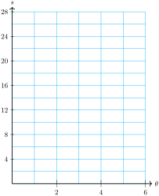
54.
Sketch several concentric circles with increasing radius, and draw an angle of 2 radians through all of them.
-
Find the arclength determined by an angle of 2 radians on circles of given radius.
| \(r\) |
\(1\) |
\(2\) |
\(3\) |
\(4\) |
\(5\) |
\(6\) |
| \(s\) |
\(\hphantom{0000}\) |
\(\hphantom{0000}\) |
\(\hphantom{0000}\) |
\(\hphantom{0000}\) |
\(\hphantom{0000}\) |
\(\hphantom{0000}\) |
Graph \(s\) against \(r\text{.}\) What is the slope of the graph?
If you double the radus \(r\text{,}\) what happens to the arclength? What happens if you triple \(r\text{?}\)
55.
The angular velocity, \(\omega\text{,}\) of a rotating object is given in radians per unit time. Thus, an object that rotates through \(\theta\) radians in time \(t\) has angular velocity given by \(\omega = \dfrac{\theta}{t}\text{.}\) Find the angular velocity of the following objects.
The London Eye ferris wheel, which makes one revolution every 20 minutes.
An old-fashioned long-playing record, which revolved \(33\frac{1}{3}\) times in 60 seconds.
56.
Use the arclength formula to derive a formula relating linear velocity, \(v\text{,}\) and angular velocity, \(\omega\text{.}\) (See Problem 55 for the definition of angular velocity.) Start with the formula for linear velocity:
\begin{equation*}
\text{velocity} = \dfrac{\text{distance}}{\text{time}},~~~ \text{or} ~~~ v = \dfrac{s}{t}
\end{equation*}
and substitute the arclength formula for \(s\text{.}\)
57.
Recall that to calculate a fraction of a revolution in degrees we divide the angle by \(360\degree\text{.}\) For example, \(90\degree\) is \(\dfrac{1}{4}\) of a revolution because \(\dfrac{90\degree}{360\degree} = \dfrac{1}{4}\text{.}\)
Write an expression that gives the fraction of a revolution for an angle \(\theta\) in radians.
Use your expression to calculate what fraction of a revolution is represented by each of the following angles: \(~\theta = \dfrac{3\pi}{4}, ~~ \theta = \dfrac{5\pi}{3}, ~~ \theta = \dfrac{7\pi}{6}\text{.}\)
58.
Use your result from Problem 57a to write each statement as a mathematical formula.
The length of the arc,
\(s\text{,}\) is equal to:
\begin{equation*}
\text{(the fraction of a revolution)} \times \text{(circumference of the circle)}
\end{equation*}
The area of the sector,
\(A\text{,}\) is equal to:
\begin{equation*}
\text{(the fraction of a revolution)} \times \text{(area of the circle)}
\end{equation*}
Exercise Group.
For Problems 59–60, Use the formula for the area of a sector from Problem 58.